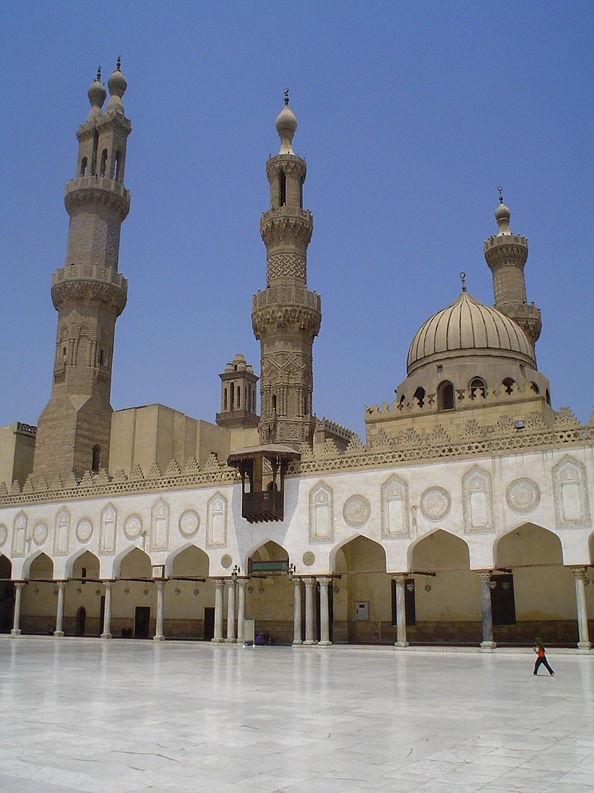

This article is about the ancient library. For its present-day counterpart, see Bibliotheca Alexandrina. For other uses, see Alexandria Library.(Great library) redirects here. For the library of Quebec in Montreal, see Grande Bibliothèque. For the library of Bagdad during the Islamic Golden Age, see House of Wisdom.
The Library of Alexandria was not the first library of its kind.A long tradition of libraries existed in both Greece and in the ancient Near East. The earliest recorded archive of written materials comes from the ancient Sumerian city-state of Uruk in around 3400 BC, when writing had only just begun to develop.Scholarly curation of literary texts began in around 2500 BC.The later kingdoms and empires of the ancient Near East had long traditions of book collecting.The ancient Hittites and Assyrians had massive archives containing records written in many different languages.The most famous library of the ancient Near East was the Library of Ashurbanipal in Nineveh, founded in the seventh century BC by the Assyrian king Ashurbanipal (ruled 668–c. 627 BC).A large library also existed in Babylon during the reign of Nebuchadnezzar II (c. 605–c. 562 BC).In Greece, the Athenian tyrant Peisistratos was said to have founded the first major public library in the sixth century BC.It was out of thee mixed heritage of both Greek and Near Eastern book collections that the idea for the Library of Alexandria was born. The Macedonian kings who succeeded Alexander the Great as rulers of the Near East wanted to promote Hellenistic culture and learning throughout the known world. Historian Roy MacLeod calls this "a programme of cultural imperialism". These rulers, therefore, had a vested interest to collect and compile information from both the Greeks and from the far more ancient kingdoms of the Near East.Libraries enhanced a city's prestige, attracted scholars, and provided practical assistance in matters of ruling and governing the kingdom.Eventually, for these reasons, every major Hellenistic urban center would have a royal library.The Library of Alexandria, however, was unprecedented because of the scope and scale of the Ptolemies' ambitions; unlike their predecessors and contemporaries, the Ptolemies wanted to produce a repository of all knowledge.[4][5] for more click here
Al-Azhar Mosque , a title given to Fatimah bent Muhammad, the Prophet of Islam. It was the first mosque established in Cairo, a city that has since gained the nickname "the City of a Thousand Minarets".[b] After its dedication in 972, and with the hiring by mosque authorities of 35 scholars in 989, the mosque slowly developed into what is today the second oldest continuously run university in the world after Al Karaouine in Idrisid Fes. Al-Azhar University has long been regarded as the foremost institution in the Islamic world for the study of Sunni theology and sharia, or Islamic law. The university, integrated within the mosque as part of a mosque school since its inception, was nationalized and officially designated an independent university in 1961, following the Egyptian Revolution of 1952. Over the course of its over a millennium-long history, the mosque has been alternately neglected and highly regarded. Because it was founded as a Shiite Ismaili institution, Saladin and the Sunni Ayyubid dynasty that he founded shunned al-Azhar, removing its status as a congregational mosque and denying stipends to students and teachers at its school. These moves were reversed under the Mamluk Sultanate, under whose rule numerous expansions and renovations took place. Later rulers of Egypt showed differing degrees of deference to the mosque and provided widely varying levels of financial assistance, both to the school and to the upkeep of the mosque. Today, al-Azhar remains a deeply influential institution in Egyptian society that is highly revered in the Sunni Muslim world and a symbol of Islamic Egypt.

1.Saint Catherine 2.Khan el-Khalili